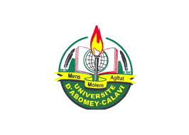
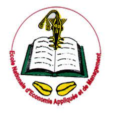

Université d'Abomey Calavi
Ecole Nationale d'Economie Appliquée et de Management

Cliquez ici
I-Cursus
1-Primaire:
Complexe scolaire La Plénitude
obtention du CEP en 2016
2-Secondaire:
Complexe scolaire La Plénitude
obtention du BEPC en 2020
obtention du BAC en 2023
II-Description
Je m'appelle MEHINTO OKOU Kamal Dine. De nationalité béninoise, je suis né à Porto-Novo. Je suis en 1ere année de licence en informatique de gestion à l'Ecole Nationale d'Economie Appliquée et de Management à GBEGAMEY. J'ai obtenu en 2023 un bac D sanctionné par une mention Assez Bien au Complexe scolaire La Plénitude. J'ai 18 ans et je suis passionné par l'informatique. Je m'efforce d'acquérir les compétences requises pour être un développeur web de renom.